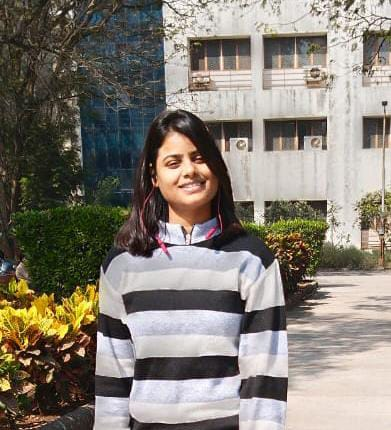

Aanchal Rai

Summary
Dynamic Mechanical Engineer with expertise in design,analysis and project management,skilled in tools like Solidworks
Contact me
Education
- 10th-St Mary's School Varanasi
- 12th-St Mary's School Varanasi
- Bachelor of Techonology-Mechanical NIT Surat(2022-2026)
Projects
- Pole Climbing Robot
- Designed and developed pole-climbing robot prototypes with self-locking and interlocking mechanisms.
- Conducted successful testing for industrial applications like inspection,maintenance,and cleaning.
- Demonstrated skills in mechanical design,prototyping and problem-solving for innvative robotics solutions.
Experience
Core Member|Mindbend
- Planned the orientation of the student chapter for the fresher's batch
- Coordinated in organising technical fest at svnit
National Cadet Corps
- Secured A grade in B Certificate Exam
- Took lead in organising NCC Exhibition in the cultural festival of the institute
Core Member|Drishti
Technical Skills
- Solidworks
- Ansys
- 3D Printing
- Vs Code
Soft Skills
- Leadership
- management
- Communication
- Teamwork
- Time Management
- Adaptibility
Interests
- Basketball and Badminton
- Secured second position in district level Badminton tournament
- Singing
- Travelling